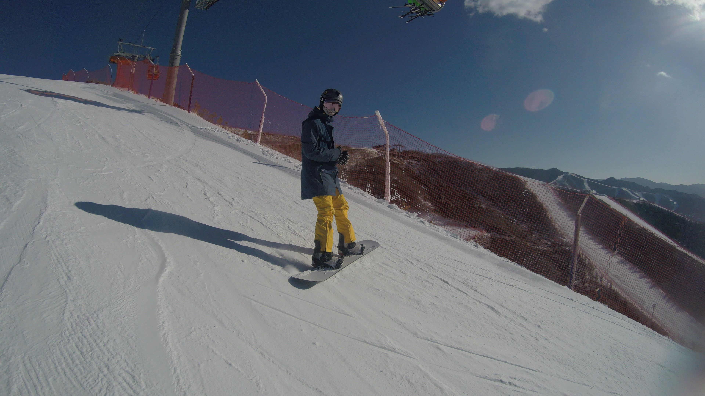

图片标记 图片标记 图片标记 图片标记 图片标记 图片标记 图片标记 图片标记 图片标记 图片标记 图片标记 图片标记 图片标记 图片标记 图片标记 图片标记 图片标记 图片标记 图片标记 图片标记 图片标记 图片标记 图片标记 图片标记 图片标记 图片标记 图片标记 图片标记 图片标记 图片标记 图片标记 图片标记 图片标记 图片标记 图片标记 图片标记 图片标记 图片标记 图片标记 图片标记